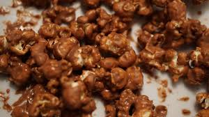

Chocolate Popcorn

Description
Yummy and simple recipe for making chocolate popcorn!
Ingredients
- nonstick cooking spray
- 2 quarts popped popcorn
- 1 cup peanuts (Optional)
- 3/4 cups of sugar
- 1/2 cups of butter
- 1/4 cups corn syrup
- 1/4 cup cocoa powder
- 1 teaspoon vanilla
Steps
- Preheat the oven to 250 degrees F (120 degrees C). Spray a 10x15-inch baking pan with nonstick spray. Place popcorn and peanuts into a large metal bowl; set aside.
- Combine sugar, butter, corn syrup, and cocoa together in a saucepan over medium-high heat; bring to a boil, stirring continuously, and cook for 2 minutes. Stir in vanilla, then pour over popcorn in the bowl. Stir until popcorn is well-coated; spread on the prepared pan.
- Bake in the preheated oven, stirring several times, for 30 minutes.
- Remove popcorn from the oven; allow to cool to room temperature to crisp up. Break into small clumps and store in an airtight container.
Home